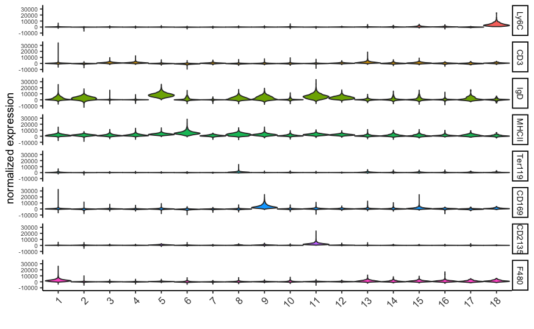
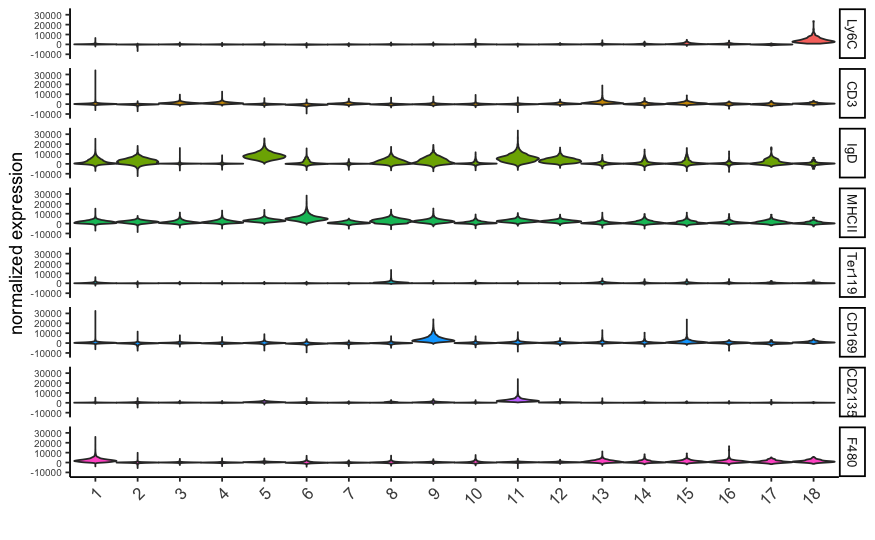

The CODEX data to run this tutorial can be found here
Giotto global instructions
## 0. Giotto global instructions #### # this example works with Giotto v.0.3.0 library(Giotto) ## create instructions ## instructions allow you to automatically save all plots into a chosen results folder ## Here we will not automatically save plots, for an example see the seqFISH+ or Visium dataset ## instructions allow us to automatically save all plots into a chosen results folder my_python_path = "/your/python/path/python" results_folder = '/your/results/path/' instrs = createGiottoInstructions(python_path = my_python_path, show_plot = T, return_plot = F, save_plot = F)
Part 1: Data input
Goltsev et al. created a multiplexed datasets of normal and lupus (MRL/lpr) murine spleens using CODEX technique. The dataset consists of 30 protein markers from 734,101 single cells. In this tutorial, 83,787 cells from sampel “BALBc-3” were selected for the analysis.

## load expression and cell location data_dir = '/path/to/data/CODEX_3D/' expr = fread(paste0(data_dir, '/', 'count_matrix/codex_BALBc_3_expression.csv.gz')) cell_loc = fread(paste0(data_dir, '/', 'cell_locations/codex_BALBc_3_coord_annot.csv.gz')) ## remove duplicated locations duplicated_locs = duplicated(cell_loc[,c("X.X", "Y.Y", "sample_Xtile_Ytile")]) cell_loc_dedup = cell_loc[!duplicated_locs,] expr_dedup = expr[!duplicated_locs,] expr_dedup_transpose = t(expr_dedup) colnames(expr_dedup_transpose)=cell_loc_dedup$cellID ## stitch x.y tile coordinates to global coordinates xtilespan = 1344; ytilespan = 1008; stitch_file = stitchTileCoordinates(location_file = cell_loc_dedup, Xtilespan = xtilespan, Ytilespan = ytilespan); stitch_file = stitch_file[,.(Xcoord, Ycoord)] ## exlude ambiguous cells from analysis ## sub_set = cell_loc_dedup$Imaging_phenotype_annotation != "dirt" & cell_loc_dedup$Imaging_phenotype_annotation != "noid" & cell_loc_dedup$Imaging_phenotype_annotation != "capsule"
Part 2: Create Giotto object & process data
## create codex_test <- createGiottoObject(raw_exprs = expr_dedup_transpose[,sub_set], spatial_locs = stitch_file[sub_set,], offset_file = NULL, instructions = instrs) codex_test = addCellMetadata(codex_test, new_metadata = cell_loc_dedup[sub_set,]) ## filter codex_test <- filterGiotto(gobject = codex_test, expression_threshold = 1, gene_det_in_min_cells = 10, min_det_genes_per_cell = 2, expression_values = c('raw'), verbose = T) codex_test <- normalizeGiotto(gobject = codex_test, scalefactor = 6000, verbose = T, log_norm = FALSE,library_size_norm = FALSE,scale_genes = FALSE,scale_cells = TRUE) ## add gene & cell statistics codex_test <- addStatistics(gobject = codex_test,expression_values = "normalized") ## adjust expression matrix for technical or known variables codex_test <- adjustGiottoMatrix(gobject = codex_test, expression_values = c('normalized'), batch_columns = NULL, covariate_columns = NULL, return_gobject = TRUE, update_slot = c('custom')) ## visualize spatPlot(gobject = codex_test,point_size = 0.1, coord_fix_ratio = 1,point_shape = 'no_border') spatPlot(gobject = codex_test, point_size = 0.2, coord_fix_ratio = 1, cell_color = 'sample_Xtile_Ytile', legend_symbol_size = 3,legend_text = 5)


Part 3: Dimension reduction
# use all Abs # PCA codex_test <- runPCA(gobject = codex_test, expression_values = 'normalized', scale_unit = T) signPCA(codex_test, scale_unit = T, scree_ylim = c(0, 3)) plotPCA(gobject = codex_test, point_shape = 'no_border', point_size = 0.2) # UMAP codex_test <- runUMAP(codex_test, dimensions_to_use = 1:14, n_components = 2, n_threads = 12) plotUMAP(gobject = codex_test, point_shape = 'no_border', point_size = 0.2)


Part 4: Cluster
## sNN network (default) codex_test <- createNearestNetwork(gobject = codex_test, dimensions_to_use = 1:14, k = 20) ## 0.1 resolution codex_test <- doLeidenCluster(gobject = codex_test, resolution = 0.5, n_iterations = 100, name = 'leiden',python_path = my_python_path) codex_metadata = pDataDT(codex_test) leiden_colors = Giotto:::getDistinctColors(length(unique(codex_metadata$leiden))) names(leiden_colors) = unique(codex_metadata$leiden) plotUMAP(gobject = codex_test, cell_color = 'leiden', point_shape = 'no_border', point_size = 0.2, cell_color_code = leiden_colors) spatPlot(gobject = codex_test, cell_color = 'leiden', point_shape = 'no_border', point_size = 0.2, cell_color_code = leiden_colors, coord_fix_ratio = 1,label_size =2, legend_text = 5,legend_symbol_size = 2)


Part 5: Co-visualize
spatDimPlot2D(gobject = codex_test, cell_color = 'leiden', spat_point_shape = 'no_border', spat_point_size = 0.2, dim_point_shape = 'no_border', dim_point_size = 0.2, cell_color_code = leiden_colors,plot_alignment = c("horizontal"))

Part 6: Differential expression
# resolution 0.5 cluster_column = 'leiden' markers_scran = findMarkers_one_vs_all(gobject=codex_test, method="scran", expression_values="norm", cluster_column=cluster_column, min_genes=3) markergenes_scran = unique(markers_scran[, head(.SD, 5), by="cluster"][["genes"]]) plotMetaDataHeatmap(codex_test, expression_values = "norm", metadata_cols = c(cluster_column), selected_genes = markergenes_scran, y_text_size = 8, show_values = 'zscores_rescaled') topgenes_scran = markers_scran[, head(.SD, 1), by = 'cluster']$genes violinPlot(codex_test, genes = unique(topgenes_scran)[1:8], cluster_column = cluster_column, strip_text = 8, strip_position = 'right') # gini markers_gini = findMarkers_one_vs_all(gobject=codex_test, method="gini", expression_values="norm", cluster_column=cluster_column, min_genes=5) markergenes_gini = unique(markers_gini[, head(.SD, 5), by="cluster"][["genes"]]) plotMetaDataHeatmap(codex_test, expression_values = "norm", metadata_cols = c(cluster_column), selected_genes = markergenes_gini, show_values = 'zscores_rescaled') topgenes_gini = markers_gini[, head(.SD, 1), by = 'cluster']$genes violinPlot(codex_test, genes = unique(topgenes_gini), cluster_column = cluster_column, strip_text = 8, strip_position = 'right')


 

Part 7: Cell type annotation
clusters_cell_types = c('erythroblasts-F4/80(+) mphs','B cells','CD8(+) T cells', 'CD4(+) T cells', 'B cells','CD11c(+)MHCII(+) cells', 'CD4(+) T cells','Ter119(+)', 'marginal zone mphs', 'CD31(+)ERTR7(+)', 'FDCs', 'B220(+) DN T cells', 'CD3(+) other markers','NK cells','granulocytes', 'plasma cells','ambiguous','CD44(+)CD1632(+)Ly6C(+) cells') names(clusters_cell_types) = c(1:18) codex_test = annotateGiotto(gobject = codex_test, annotation_vector = clusters_cell_types, cluster_column = 'leiden', name = 'cell_types') plotMetaDataHeatmap(codex_test, expression_values = 'scaled', metadata_cols = c('cell_types'),y_text_size = 6) # create consistent color code mynames = unique(pDataDT(codex_test)$cell_types) mycolorcode = Giotto:::getDistinctColors(n = length(mynames)) names(mycolorcode) = mynames plotUMAP(gobject = codex_test, cell_color = 'cell_types',point_shape = 'no_border', point_size = 0.2, cell_color_code = mycolorcode, show_center_label = F, label_size =2, legend_text = 5, legend_symbol_size = 2) spatPlot(gobject = codex_test, cell_color = 'cell_types', point_shape = 'no_border', point_size = 0.2, cell_color_code = mycolorcode, coord_fix_ratio = 1, label_size =2, legend_text = 5, legend_symbol_size = 2)


part 8: Visualize cell types and gene expression in selected zones
codex_test_zone1 = subsetGiotto(codex_test, cell_ids = codex_test@cell_metadata$cell_ID[codex_test@cell_metadata$sample_Xtile_Ytile=="BALBc-3_X04_Y08"]) plotUMAP(gobject = codex_test_zone1, cell_color = 'cell_types',point_shape = 'no_border', point_size = 1, cell_color_code = mycolorcode, show_center_label = F, label_size =2, legend_text = 5, legend_symbol_size = 2) spatPlot(gobject = codex_test_zone1, cell_color = 'cell_types', point_shape = 'no_border', point_size = 1, cell_color_code = mycolorcode, coord_fix_ratio = 1, label_size =2, legend_text = 5, legend_symbol_size = 2) spatDimGenePlot(codex_test_zone1, expression_values = 'scaled', genes = c("CD8a","CD19"), spat_point_shape = 'no_border', dim_point_shape = 'no_border', genes_high_color = 'red', genes_mid_color = 'white', genes_low_color = 'darkblue')


codex_test_zone2 = subsetGiotto(codex_test, cell_ids = codex_test@cell_metadata$cell_ID[codex_test@cell_metadata$sample_Xtile_Ytile=="BALBc-3_X04_Y03"]) plotUMAP(gobject = codex_test_zone2, cell_color = 'cell_types',point_shape = 'no_border', point_size = 1, cell_color_code = mycolorcode, show_center_label = F, label_size =2, legend_text = 5, legend_symbol_size = 2) spatPlot(gobject = codex_test_zone2, cell_color = 'cell_types', point_shape = 'no_border', point_size = 1, cell_color_code = mycolorcode, coord_fix_ratio = 1, label_size =2, legend_text = 5, legend_symbol_size = 2) spatDimGenePlot(codex_test_zone2, expression_values = 'scaled', genes = c("CD4", "CD106"), spat_point_shape = 'no_border', dim_point_shape = 'no_border', genes_high_color = 'red', genes_mid_color = 'white', genes_low_color = 'darkblue')